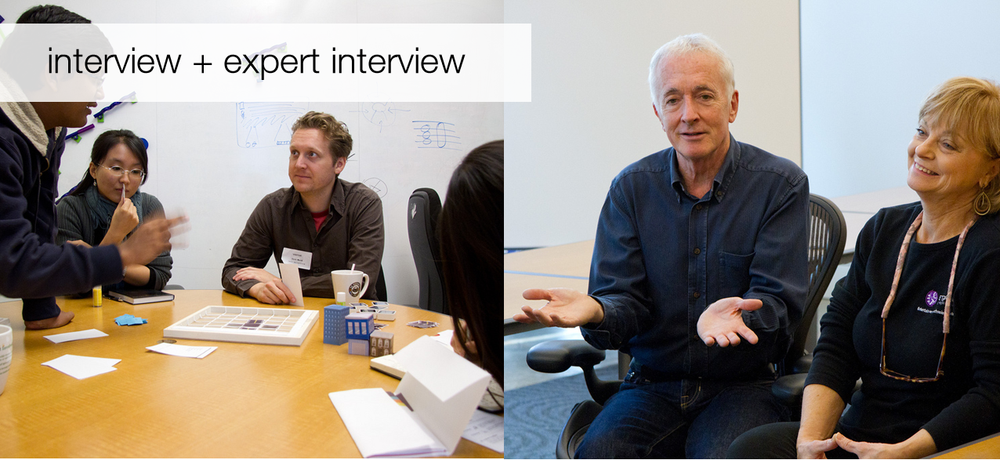
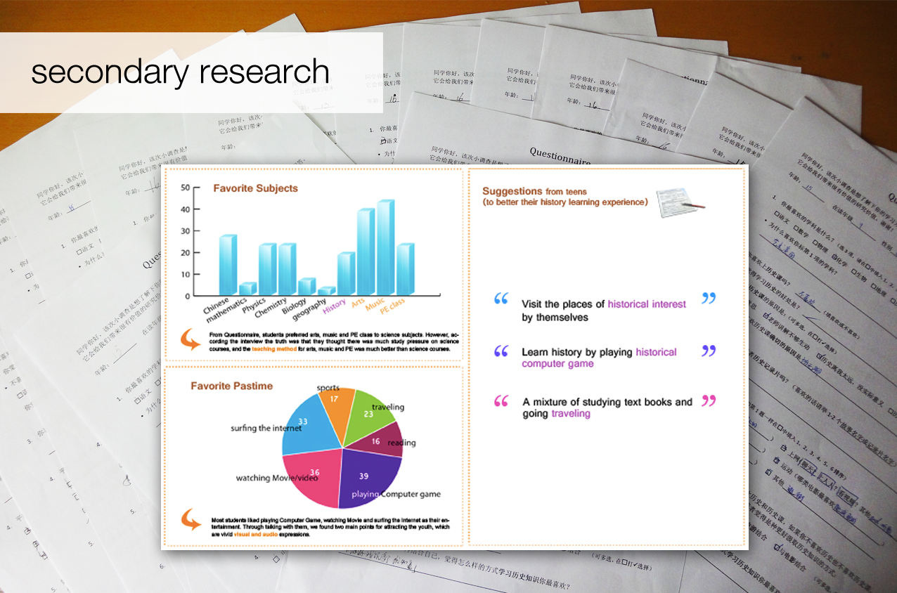
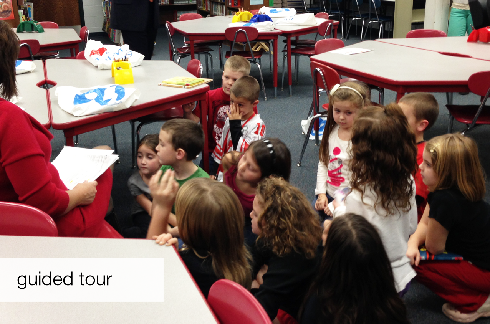
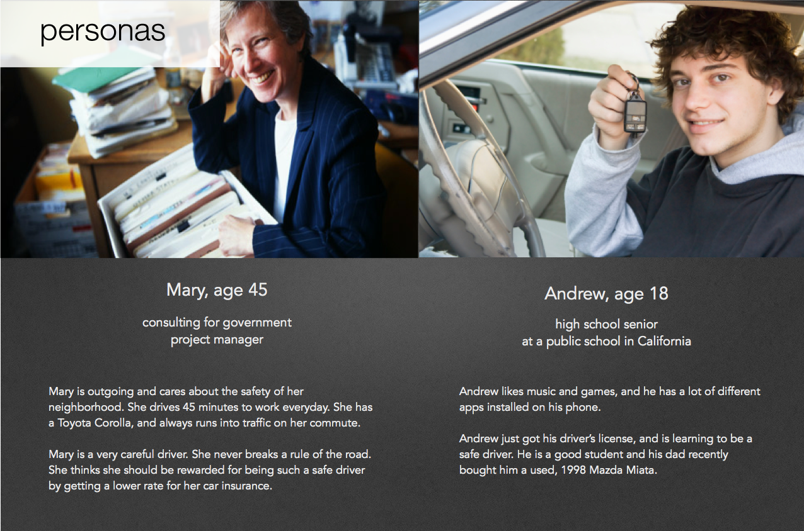
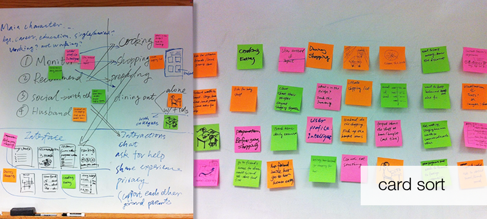
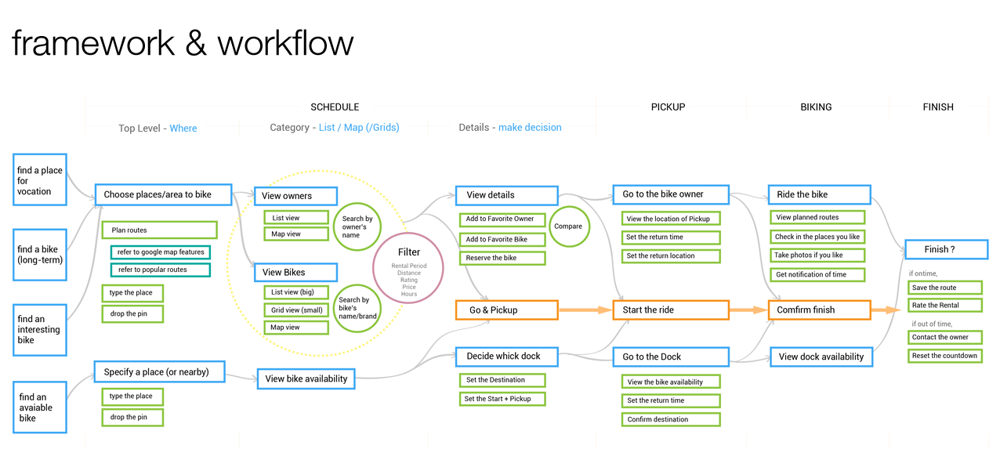
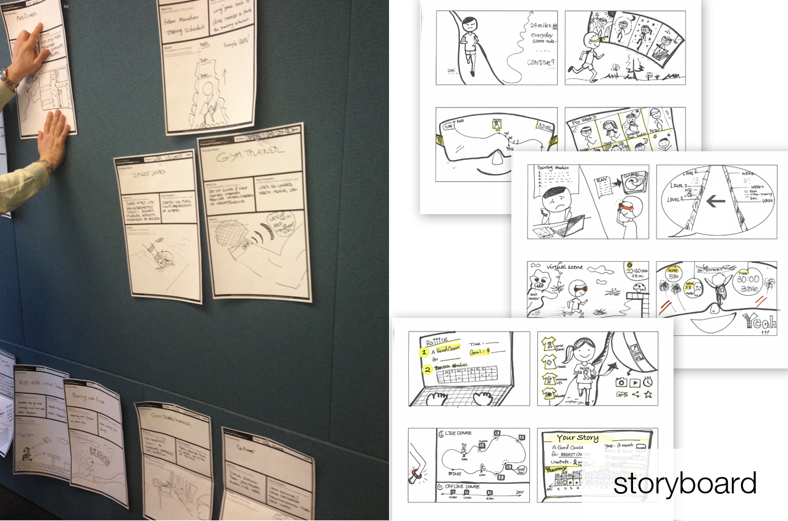
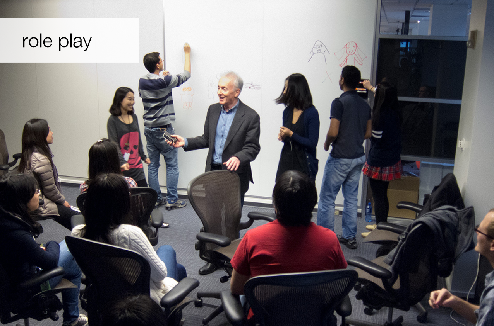
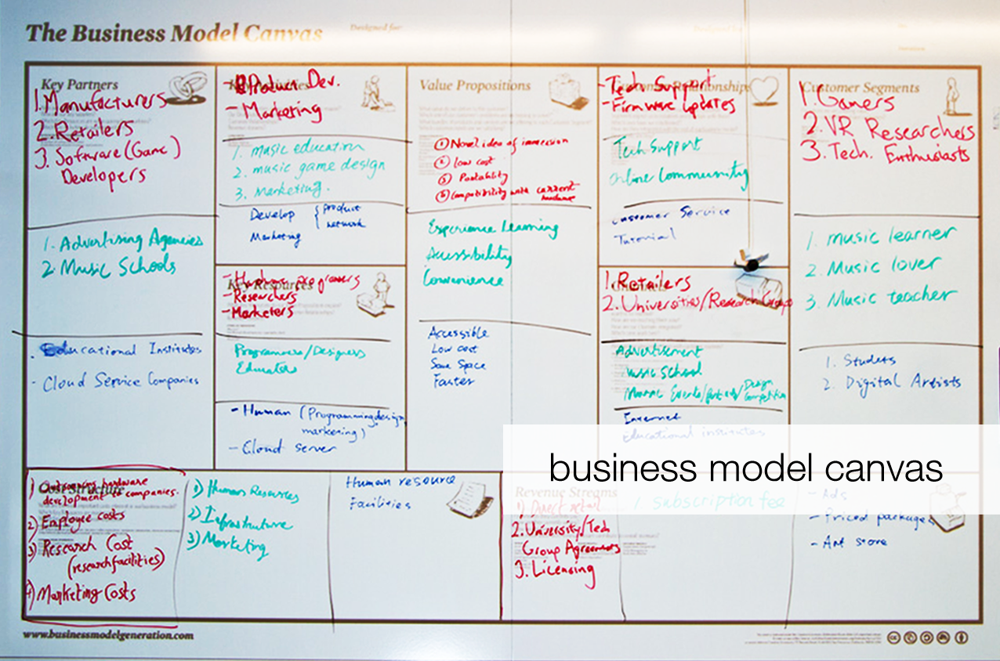
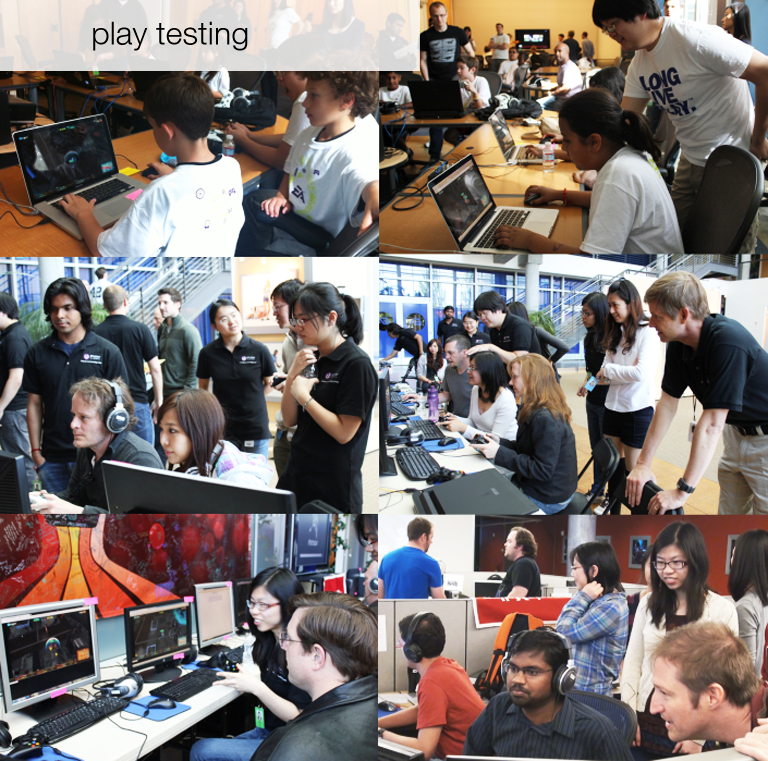

To me, Design Research plays a big role in all my design activities, because it's very helpful for:
Discovering: design research helps me to discover more about my design objectives.
Guiding: it guides me, in a sense, while I'm doing design. Bearing usability principles in mind benefits the design result.
Testing: conducting proper research during design process is quite helpful for getting insights and feedback.
In general, I conduct Design Research (both qualitative and quantitative) mainly in those 3 parts:
1. Exploring the context and seeking inspiration

PHOTO: Megalodon game design interview

PHOTO: History Treasure's secondary research results

PHOTO: Elizabeth Forward School visit for better knowing users' daily routine. Project Torqueit! for DARPAIMAGES: "Extremes and mainstreams" research for Project Mobile Assistant for Pregnancy
2. Analyzing and synthesizing research findings

IMAGE: Personas research in project RoadBots.

IMAGE: Card sort in project RoadBots for grouping and distilling info into design insights.IMAGE: Journey map of scientific inquires for Darpa project

IMAGE: framework & workflow of bike rental experience in Project Boiok
3. Integrate feedback and iterate
PHOTOS: Paper prototyping in Project History Treasure

PHOTO: Storyboarding for Mobile Assistant for Pregnancy in the interaction design class at CMU

PHOTO: Role playing in the class to explore tangible ideas

PHOTO: PHOTO: Business model canvas made in EET program

PHOTOS: A number of play testing we took for project Megalodon at EA.